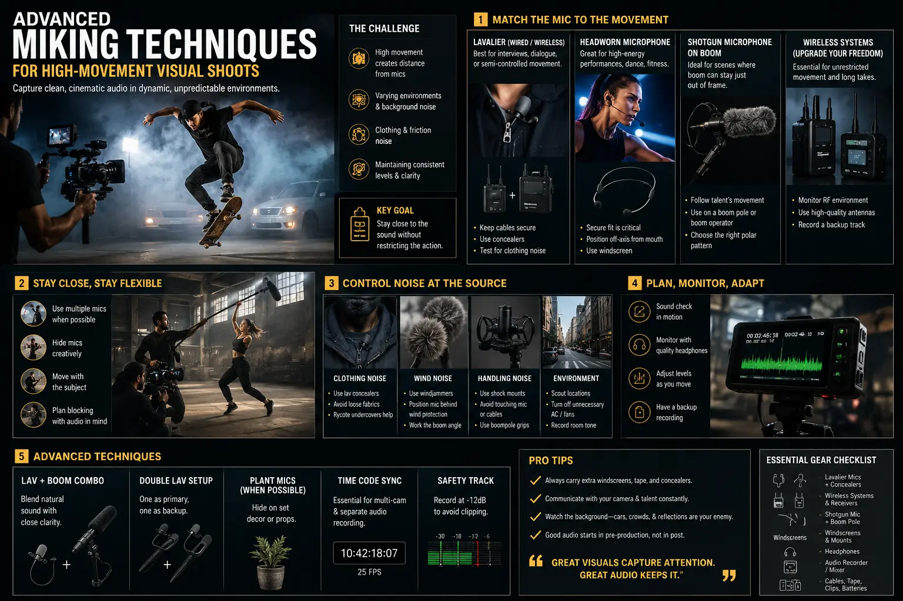

30
Jul
Advanced Miking Techniques for High-Movement Visual Shoots
Learn advanced miking techniques for high-movement visual shoots. From concealed lavalier microphone placement to eliminating clothing rustle noise and URSA mic mounts tutorials.